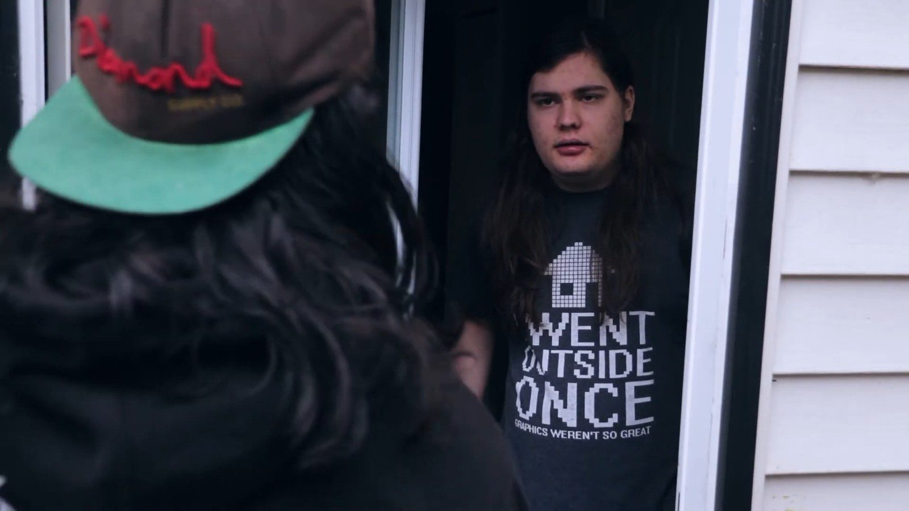
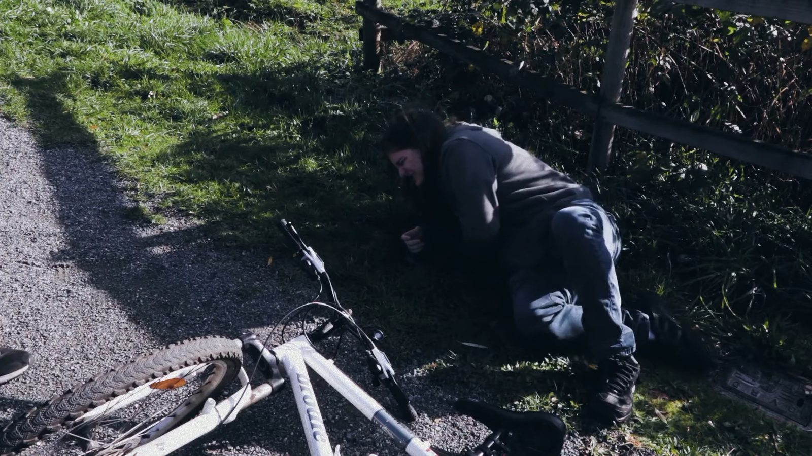
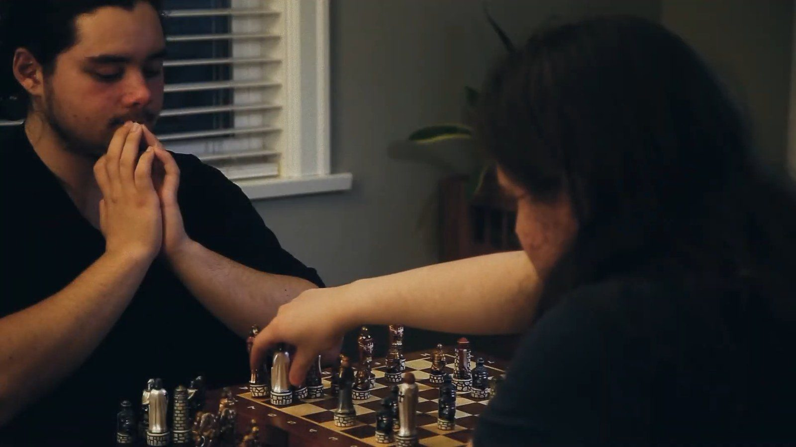
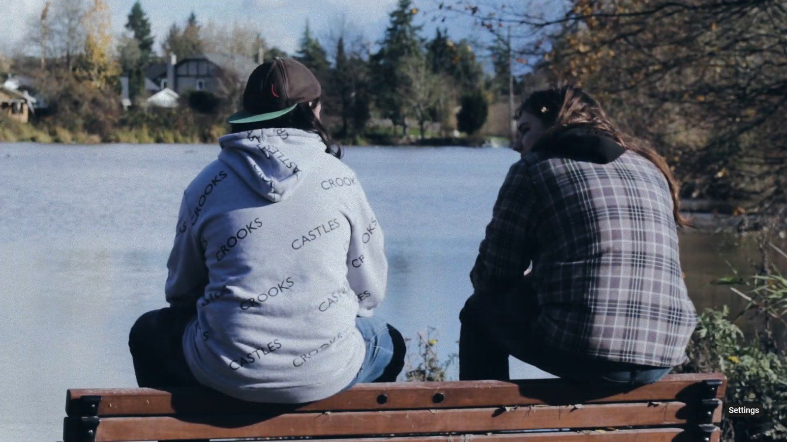

Bicycle
What I made
- Edited the film (shot length, pacing and colour grading), including the montage that compresses weeks of a growing friendship into a few minutes by running the bond and the bike skill as one progression.
- Did the sound design, and co-directed on several shoot days.
- Rebuilt our shot list after an inefficient first shoot day; the tighter list is what let the team move faster on every day after it.
Watch the film
Bicycle
6 min
The Story Behind Bicycle

Concept
Bicycle was written by one of our teammates, and the moment we heard it we were all on board, since it felt like a great baseline for learning to be expressive on camera. It was also the first film of this length any of us had made. The story: a teen loses his internet and, reluctantly, answers a knock at the door from an overly friendly neighbor.

How It Works
With nothing else to do, he agrees to hang out, and the neighbor teaches him to ride a bike. They grow closer over the following weeks. When his internet finally comes back, he heads straight for his computer, but turning it on, he finds himself thinking back on his time with his friend instead, and realizes he'd rather be riding bikes than alone in his room. He goes to find him, and they ride off together.

The Montage
Compressing "weeks" into a few minutes of screen time came down to a montage that runs two threads at once: the boys getting more comfortable and closer with each other, and the same character slowly getting more confident on the bike. Neither thread needs to carry the scene alone: the growing friendship and the growing skill read as the same progression.
The Challenge
This being everyone's first film of this scale, most of what went wrong happened before we ever shot anything. We weren't used to having every shot planned out with a storyboard and shot list, and our first shoot day was inefficient because of it. After that I put together a much more thorough shot list, which let us move a lot faster on the days that followed, a lesson in the strength of pre-production that stuck with me well past this project.

Reception
The film won Best Narrative and was nominated for Best Editing, my own department, and the whole team was genuinely happy with how it turned out. More than any award, this was the project where I really learned the value of pre-production and planning.